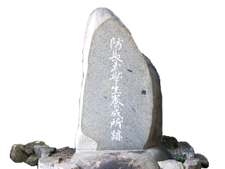

財団について


財団活動の紹介
一般財団法人「愛山青少年活動推進財団」は、平成6年5月、戦争の犠牲となった者の子女の育英援護を目的とした（財）愛山会の解散を受けて、その財産を継承し、「ふるさと山口を愛し、心身共にたくましい青少年の育成を支援すること」を目的とした法人として発足しました。
愛山青少年活動推進財団は、21世紀を担う防長の青少年が、輝かしい歴史と伝統を学び受け継ぎ、郷土を愛するたくましい若者に育つことを願って、
- たくましい心身を具備した青少年を育成するための野外活動等各種の活動
- 山口県に関わる先賢の顕彰及び歴史の伝承普及のための活動
- 前各号に定める事業を行う団体に対する助成
などの事業を行って、微力ながら郷土の発展に寄与する所存であります。

理事長あいさつ
就任のご挨拶
この度、理事の任期満了による改選により、引き続き理事長に再任されました。
当財団は、「ふるさと山口を愛し、心身ともにたくましい青少年の育成事業の支援」を目的としており、県内で青少年の健全育成に携わっておられる団体に助成金を交付し、ご支援をさせていただいております。
皆様のご期待に添えますよう一層尽力してまいりますので、今後ともご理解とご協力を賜りますよう、よろしくお願いいたします。
令和8年5月
一般財団法人 愛山青少年活動推進財団
理事長 須山 和惠